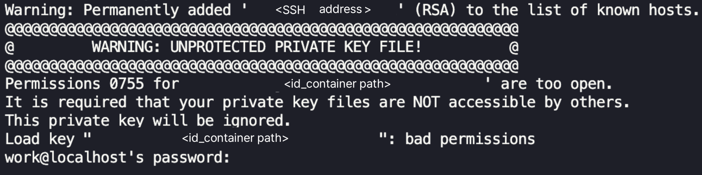
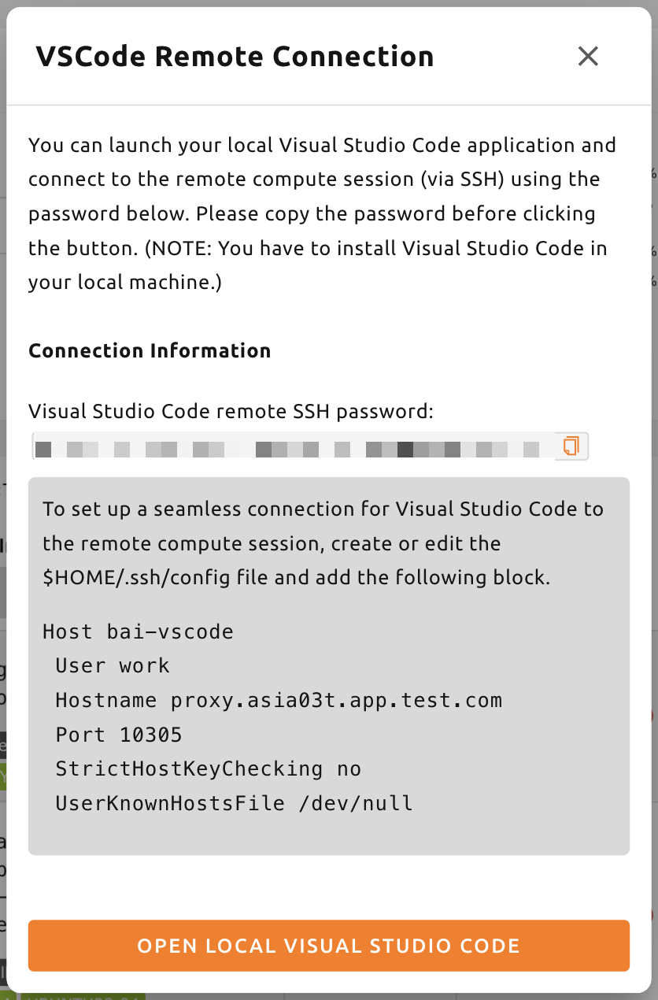
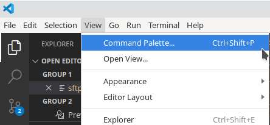

การเชื่อมต่อ SSH/SFTP ไปยังเซสชันการคำนวณ#
Backend.AI สนับสนุนการเชื่อมต่อ SSH/SFTP ไปยังเซสชันการคำนวณที่สร้างขึ้น (คอนเทนเนอร์) ในส่วนนี้เราจะเรียนรู้วิธีทำเช่นนั้น
สำหรับ Linux / Mac#
ก่อนอื่น สร้างเซสชันการคำนวณ จากนั้นคลิกที่ไอคอนแอป (ปุ่มแรก) ใน Control ตามด้วยไอคอน SSH / SFTP หลังจากนั้นจะมีการเริ่มต้น daemon ที่อนุญาตให้เข้าถึง SSH/SFTP จากภายในคอนเทนเนอร์ และแอป WebUI จะทำงานร่วมกับ daemon ผ่านบริการพร็อกซีภายในท้องถิ่น
คุณไม่สามารถสร้างการเชื่อมต่อ SSH/SFTP ไปยังเซสชันจนกว่าคุณจะคลิกที่ไอคอน SSH/SFTP เมื่อคุณปิดแอป WebUI และเปิดใหม่อีกครั้ง การเชื่อมต่อระหว่างพร็อกซีท้องถิ่นและแอป WebUI จะถูกสร้างขึ้นใหม่ ดังนั้นจึงต้องคลิกที่ไอคอน SSH/SFTP อีกครั้ง
ถัดไป กล่องโต้ตอบที่มีข้อมูลการเชื่อมต่อ SSH/SFTP จะปรากฏขึ้น
กล่องโต้ตอบนี้แสดงค่า ผู้ใช้ (User), เจ้าภาพ (Host) และ ท่าเรือ (Port)
ที่ใช้ในการเชื่อมต่อ พร้อมด้วยตัวอย่างคำสั่ง sftp, scp และ rsync
ที่พร้อมใช้งาน และปุ่ม ดาวน์โหลดคีย์ SSH ที่บันทึกไฟล์ id_container
ลงในเครื่องในพื้นที่
ไฟล์นี้เป็นคีย์ส่วนตัว SSH ที่สร้างขึ้นโดยอัตโนมัติ แทนที่จะใช้
ปุ่มดังกล่าว คุณยังสามารถดาวน์โหลดไฟล์ id_container ที่อยู่ภายใต้
/home/work/ ด้วยเทอร์มินัลเว็บหรือ Jupyter Notebook ของคุณได้ คีย์ SSH
ที่สร้างขึ้นโดยอัตโนมัติอาจเปลี่ยนแปลงเมื่อมีการสร้างเซสชันใหม่ ในกรณีนั้น ต้อง
ดาวน์โหลดใหม่อีกครั้ง


ให้ใช้ที่อยู่สำหรับการเชื่อมต่อจากช่องโฮสต์และพอร์ตในกล่องโต้ตอบนี้เสมอ ค่าเหล่านี้ขึ้นอยู่กับวิธีที่คุณใช้งาน Backend.AI หากไม่สามารถระบุข้อมูลการเชื่อมต่อได้ กล่องโต้ตอบจะไม่เปิดขึ้นเลย และจะมีการแจ้งเตือนข้อผิดพลาดอธิบายเหตุผล ดูที่ ข้อผิดพลาดในการเชื่อมต่อ
หากต้องการเชื่อมต่อ SSH ไปยังเซสชันการคำนวณด้วยคีย์ส่วนตัว SSH ที่ดาวน์โหลดมา คุณ
เรียกใช้คำสั่งต่อไปนี้ในสภาพแวดล้อมเชลล์ คุณควรเขียน
เส้นทางไปยังไฟล์ id_container ที่ดาวน์โหลดมาหลังตัวเลือก -i
หมายเลขพอร์ตที่แสดงในกล่องโต้ตอบหลังตัวเลือก -p
และใช้โฮสต์ที่แสดงในกล่องโต้ตอบเป็นที่อยู่สำหรับการเชื่อมต่อ ผู้ใช้ภายในเซสชันการคำนวณ
โดยปกติจะถูกตั้งค่าเป็น work แต่หากเซสชันของคุณใช้บัญชีอื่น ส่วน work
ใน work@<โฮสต์> ควรเปลี่ยนเป็นบัญชีเซสชันจริง หาก
คุณเรียกใช้คำสั่งอย่างถูกต้อง คุณจะเห็นว่าการเชื่อมต่อ SSH ถูกสร้างขึ้นไปยัง
เซสชันการคำนวณ และคุณจะได้รับการต้อนรับด้วยสภาพแวดล้อมเชลล์ของคอนเทนเนอร์
โปรดแทนที่โฮสต์และพอร์ตในตัวอย่างด้านล่างด้วยโฮสต์และพอร์ตที่แสดงในกล่องโต้ตอบของคุณเอง
ssh -i ~/.ssh/id_container -p 30722 -o StrictHostKeyChecking=no -o UserKnownHostsFile=/dev/null work@127.0.0.1
Warning: Permanently added '[127.0.0.1]:30722' (RSA) to the list of known hosts.
f310e8dbce83:~$การเชื่อมต่อด้วย SFTP ก็เกือบจะเหมือนกัน หลังจากเรียกใช้ไคลเอ็นต์ SFTP และ
ตั้งค่าวิธีการเชื่อมต่อด้วยคีย์สาธารณะ เพียงระบุ id_container
เป็นคีย์ส่วนตัว SSH ไคลเอ็นต์ FTP แต่ละตัวอาจใช้วิธีที่แตกต่างกัน ดังนั้นให้ดู
คู่มือของไคลเอ็นต์ FTP แต่ละตัวสำหรับรายละเอียด
หมายเลขพอร์ตการเชื่อมต่อ SSH/SFTP จะถูกกำหนดแบบสุ่มทุกครั้งที่สร้างเซสชัน หากคุณต้องการใช้หมายเลขพอร์ต SSH/SFTP เฉพาะ คุณสามารถป้อน หมายเลขพอร์ตในช่อง "Preferred SSH Port" ในเมนูการตั้งค่าผู้ใช้ได้ เพื่อหลีกเลี่ยงการชนกันที่อาจเกิดขึ้นกับบริการอื่น ๆ ภายในเซสชันการคำนวณ ขอแนะนำให้ระบุหมายเลขพอร์ตระหว่าง 10000-65000 อย่างไรก็ตาม หาก มีการเชื่อมต่อ SSH/SFTP โดยเซสชันการคำนวณสองรายการหรือมากกว่าในเวลา เดียวกัน การเชื่อมต่อ SSH/SFTP ครั้งที่สองจะไม่สามารถใช้พอร์ตที่กำหนดได้ (เนื่องจาก การเชื่อมต่อ SSH/SFTP ครั้งแรกได้ใช้ไปแล้ว) ดังนั้นหมายเลขพอร์ตแบบสุ่ม จะถูกกำหนด
หากคุณต้องการใช้คีย์แพร์ SSH ของคุณเองแทน id_container ให้สร้าง
โฟลเดอร์ประเภท user ชื่อ .ssh หากคุณสร้างไฟล์ authorized_keys ใน
โฟลเดอร์นั้นและเพิ่มเนื้อหาของคีย์สาธารณะ SSH ของคุณ คุณสามารถ
เชื่อมต่อด้วย SSH/SFTP ผ่านคีย์ส่วนตัว SSH ของคุณเองได้โดยไม่ต้อง
ดาวน์โหลด id_container หลังจากสร้างเซสชันการคำนวณ
หากคุณได้รับข้อความเตือนต่อไปนี้ ให้ลองอีกครั้งหลังจากเปลี่ยน
สิทธิ์ของ id_container เป็น 600 (chmod 600 <id_container path>)

ข้อผิดพลาดในการเชื่อมต่อ#
ข้อมูลการเชื่อมต่อ SSH/SFTP จะถูกระบุผ่าน App Proxy ของกลุ่มทรัพยากรที่รันเซสชันนั้น เมื่อขั้นตอนดังกล่าวล้มเหลว กล่องโต้ตอบการเชื่อมต่อจะไม่เปิดขึ้น และจะมีการแจ้งเตือนรายงานสาเหตุแทน ข้อความจะบอกให้ทราบว่าขั้นตอนใดล้มเหลว
- พร็อกซียังไม่พร้อม ตรวจสอบการตั้งค่าพร็อกซีสำหรับรายละเอียด: WebUI ไม่สามารถติดต่อ App Proxy ได้ หรือพร็อกซีไม่ได้ส่งข้อมูลการเชื่อมต่อกลับมา พร็อกซีอาจยังอยู่ระหว่างการเริ่มทำงาน ให้รอสักครู่แล้วคลิกไอคอน SSH/SFTP อีกครั้ง หากข้อความยังคงปรากฏ แสดงว่าเครื่องของคุณไม่สามารถเข้าถึง App Proxy ได้ เช่น ถูกไฟร์วอลล์ปิดกั้น หรือให้บริการด้วยโปรโตคอลที่ต่างจาก WebUI โปรดขอให้ผู้ดูแลระบบตรวจสอบ ที่อยู่เซิร์ฟเวอร์ App Proxy ของกลุ่มทรัพยากรนั้น
- ยังไม่รองรับการเชื่อมต่อ TCP โดยตรงผ่านพร็อกซี: App Proxy ตอบกลับแล้ว แต่ไม่ได้ให้บริการการเชื่อมต่อ TCP โดยตรงที่ SSH/SFTP ต้องใช้ แอปที่ทำงานบนเว็บ เช่น Jupyter Notebook และเทอร์มินัล ยังคงใช้งานได้ในเซสชันเดียวกัน โปรดขอให้ผู้ดูแลระบบเปิดใช้งาน App Proxy ที่รองรับ TCP สำหรับกลุ่มทรัพยากรนั้น
- ไม่สามารถเปิดแอปได้เนื่องจาก URL ไม่ถูกต้อง: App Proxy ส่งที่อยู่ที่ WebUI ไม่สามารถตีความได้กลับมา ให้คลิกไอคอน SSH/SFTP อีกครั้ง และหากข้อความยังคงปรากฏ โปรดแจ้งผู้ดูแลระบบพร้อมกับชื่อกลุ่มทรัพยากรของเซสชันนั้น
สำหรับ Windows / FileZilla#
แอป Backend.AI WebUI รองรับการเชื่อมต่อด้วยคีย์สาธารณะแบบ OpenSSH (RSA2048)
หากต้องการเข้าถึงด้วยไคลเอ็นต์เช่น PuTTY บน Windows จะต้องแปลงคีย์ส่วนตัว
เป็นไฟล์ ppk ผ่านโปรแกรมเช่น PuTTYgen คุณสามารถดู
ลิงก์ต่อไปนี้สำหรับวิธีการแปลง:
https://wiki.filezilla-project.org/Howto เพื่อให้อธิบายง่ายขึ้น ส่วนนี้
จะอธิบายวิธีการเชื่อมต่อ SFTP ผ่านไคลเอ็นต์ FileZilla บน Windows
ดูที่วิธีการเชื่อมต่อบน Linux/Mac สร้างเซสชันการคำนวณ ตรวจสอบ
พอร์ตการเชื่อมต่อ และดาวน์โหลด id_container id_container เป็นคีย์
แบบ OpenSSH ดังนั้นหากคุณใช้ไคลเอ็นต์ที่รองรับเฉพาะ Windows หรือคีย์ประเภท ppk
คุณต้องแปลงคีย์ ที่นี่เราจะแปลงผ่านโปรแกรม PuTTYgen
ที่ติดตั้งพร้อมกับ PuTTY หลังจากเรียกใช้ PuTTYgen คลิกที่ import key ในเมนู
Conversions เลือกไฟล์ id_container ที่ดาวน์โหลดมาจากกล่องโต้ตอบเปิดไฟล์
คลิกปุ่ม Save private key ของ PuTTYGen และบันทึกไฟล์ด้วย
ชื่อ id_container.ppk

หลังจากเรียกใช้ไคลเอ็นต์ FileZilla แล้ว ให้ไปที่ Settings-Connection-SFTP
และลงทะเบียนไฟล์คีย์ id_container.ppk (id_container สำหรับไคลเอ็นต์
ที่รองรับ OpenSSH)

เปิด Site Manager สร้างไซต์ใหม่ และป้อนข้อมูลการเชื่อมต่อตาม ด้านล่าง

เมื่อเชื่อมต่อกับคอนเทนเนอร์เป็นครั้งแรก อาจมีป๊อปอัปยืนยัน ต่อไปนี้ปรากฏขึ้น คลิกปุ่ม OK เพื่อบันทึกคีย์โฮสต์

หลังจากครู่หนึ่ง คุณจะเห็นว่าการเชื่อมต่อถูกสร้างขึ้นดังต่อไปนี้
ตอนนี้คุณสามารถถ่ายโอนไฟล์ขนาดใหญ่ไปยัง /home/work/ หรือโฟลเดอร์จัดเก็บที่เมานต์อื่น
ผ่านการเชื่อมต่อ SFTP นี้ได้

สำหรับ Visual Studio Code#
Backend.AI รองรับการพัฒนาด้วย Visual Studio Code ในเครื่องผ่านการเชื่อมต่อ SSH/SFTP ไปยังเซสชันการคำนวณ เมื่อเชื่อมต่อแล้ว คุณสามารถโต้ตอบกับไฟล์และ โฟลเดอร์ที่ใดก็ได้บนเซสชันการคำนวณ ในส่วนนี้ เราจะเรียนรู้วิธี ทำสิ่งนี้
ก่อนอื่น คุณควรติดตั้ง Visual Studio Code และแพ็กเกจส่วนขยาย Remote Development
ลิงก์: https://aka.ms/vscode-remote/download/extension

หลังจากติดตั้งส่วนขยายแล้ว คุณควรกำหนดค่าการเชื่อมต่อ SSH สำหรับ เซสชันการคำนวณ ในกล่องโต้ตอบ VSCode Remote Connection คลิกปุ่มไอคอนคัดลอก เพื่อคัดลอกรหัสผ่าน SSH ระยะไกลของ Visual Studio Code นอกจากนี้ ให้จดจำโฮสต์และหมายเลขพอร์ตที่แสดงในกล่องโต้ตอบ

จากนั้น ตั้งค่าไฟล์ SSH config แก้ไขไฟล์ ~/.ssh/config (สำหรับ Linux/Mac)
หรือ C:\Users\[ชื่อผู้ใช้]\.ssh\config (สำหรับ Windows) และเพิ่มบล็อกต่อไปนี้
ป้อนโฮสต์และหมายเลขพอร์ตจากกล่องโต้ตอบในบรรทัด Hostname และ Port
เพื่อความสะดวก เราตั้งค่าชื่อโฮสต์เป็น bai-vscode สามารถเปลี่ยนเป็นนามแฝงอื่นได้
Host bai-vscode
User work
Hostname 127.0.0.1
Port 49335
StrictHostKeyChecking no
UserKnownHostsFile /dev/nullตอนนี้ใน Visual Studio Code ให้เลือก Command Palette... จากเมนู View

Visual Studio Code สามารถตรวจจับประเภทของโฮสต์ที่คุณกำลังเชื่อมต่อได้
โดยอัตโนมัติ เลือก Remote-SSH: Connect to Host...

คุณจะเห็นรายการโฮสต์ใน .ssh/config โปรดเลือกโฮสต์ที่จะ
เชื่อมต่อ ในกรณีนี้ คือ vscode

การเลือกชื่อโฮสต์จะนำคุณไปสู่การเข้าถึงเซสชันการคำนวณระยะไกล หลังจากเชื่อมต่อแล้ว คุณจะเห็นหน้าต่างว่าง คุณสามารถดูแถบสถานะได้เสมอ เพื่อดูว่าคุณเชื่อมต่อกับโฮสต์ใดอยู่

จากนั้นคุณสามารถเปิดโฟลเดอร์หรือพื้นที่ทำงานใด ๆ บนโฮสต์ระยะไกลได้โดยการเข้าถึงเมนู File > Open... หรือ File > Open Workspace... เหมือนที่คุณทำตามปกติ!

ตั้งค่าการเชื่อมต่อ SSH ด้วยแพ็กเกจ Backend.AI Client#
เอกสารนี้อธิบายวิธีการสร้างการเชื่อมต่อ SSH ไปยังเซสชันการคำนวณ ในสภาพแวดล้อมที่ไม่สามารถใช้ส่วนติดต่อผู้ใช้แบบกราฟิก (GUI) ได้
โดยทั่วไป โหนด GPU ที่เรียกใช้เซสชันการคำนวณ (คอนเทนเนอร์) ไม่สามารถเข้าถึงได้ โดยตรงจากภายนอก ดังนั้น เพื่อสร้างการเชื่อมต่อ SSH หรือ sFTP ไปยังเซสชันการคำนวณ จำเป็นต้องเริ่มต้นพร็อกซีในพื้นที่ที่สร้างอุโมงค์ เพื่อถ่ายทอดการเชื่อมต่อระหว่างผู้ใช้และเซสชัน การใช้ แพ็กเกจ Backend.AI Client กระบวนการนี้ค่อนข้างง่ายในการกำหนดค่า
เตรียมแพ็กเกจ Backend.AI Client#
เตรียมด้วยอิมเมจ Docker#
แพ็กเกจ Backend.AI Client มีให้ใช้งานเป็นอิมเมจ Docker คุณสามารถดึง อิมเมจจาก Docker Hub ได้ด้วยคำสั่งต่อไปนี้:
docker pull lablup/backend.ai-client
docker pull lablup/backend.ai-client:${VERSION}เวอร์ชันของเซิร์ฟเวอร์ Backend.AI สามารถพบได้ในเมนู "About Backend.AI" ที่ ปรากฏขึ้นเมื่อคุณคลิกที่ไอคอนรูปคนที่มุมขวาบนของ Web UI

เรียกใช้อิมเมจ Docker ด้วยคำสั่งต่อไปนี้:
docker run --rm -it lablup/backend.ai-client bashตรวจสอบว่าคำสั่ง backend.ai พร้อมใช้งานในคอนเทนเนอร์หรือไม่ หาก
พร้อมใช้งาน ข้อความช่วยเหลือจะแสดงขึ้น
backend.aiเตรียมโดยตรงจากโฮสต์ด้วยสภาพแวดล้อมเสมือน Python#
หากคุณไม่สามารถหรือไม่ต้องการใช้ Docker คุณสามารถติดตั้งแพ็กเกจ Backend.AI Client โดยตรงบนเครื่องโฮสต์ของคุณได้ ข้อกำหนดเบื้องต้นคือ:
- เวอร์ชัน Python ที่จำเป็นอาจแตกต่างกันไปขึ้นอยู่กับเวอร์ชันของ Backend.AI Client คุณสามารถตรวจสอบตารางความเข้ากันได้ที่ https://github.com/lablup/backend.ai#python-version-compatibility
- อาจจำเป็นต้องใช้คอมไพเลอร์
clang - อาจจำเป็นต้องใช้แพ็กเกจ
zstdหากคุณใช้ Python binary ของindygreg
ขอแนะนำให้ใช้สภาพแวดล้อมเสมือน Python ในการติดตั้งแพ็กเกจ
วิธีหนึ่งคือใช้ Python binary ที่สร้างแบบคงที่จาก
คลัง indygreg ดาวน์โหลด binary ที่ตรงกับสถาปัตยกรรมเครื่องในพื้นที่ของคุณ
จากหน้าต่อไปนี้และแตกไฟล์
https://github.com/indygreg/python-build-standalone/releases
หากคุณใช้สภาพแวดล้อม Ubuntu แบบ x86 ที่ได้รับความนิยม คุณสามารถดาวน์โหลดและ แตกไฟล์ได้ดังต่อไปนี้:
bash$ wget https://github.com/indygreg/python-build-standalone/releases/download/20240224/cpython-3.11.8+20240224-x86_64-unknown-linux-gnu-pgo-full.tar.zst $ tar -I unzstd -xvf *.tar.zst
หลังจากแตกไฟล์ binary แล้ว จะมีการสร้างไดเรกทอรี python ภายใต้
ไดเรกทอรีปัจจุบัน คุณสามารถตรวจสอบเวอร์ชันของ Python ที่ดาวน์โหลดได้โดยเรียกใช้
คำสั่งต่อไปนี้
./python/install/bin/python3 -V
Python 3.11.8เพื่อหลีกเลี่ยงไม่ให้ส่งผลกระทบต่อสภาพแวดล้อม Python อื่น ๆ บนระบบ ขอแนะนำให้
สร้างสภาพแวดล้อมเสมือน Python แยกต่างหาก เมื่อคุณเรียกใช้
คำสั่งต่อไปนี้ จะมีการสร้างสภาพแวดล้อมเสมือน Python ภายใต้ไดเรกทอรี
.venv.
./python/install/bin/python3 -m venv .venvเปิดใช้งานสภาพแวดล้อมเสมือน เนื่องจากมีการเปิดใช้งานสภาพแวดล้อมเสมือนใหม่แล้ว
จะมีเพียงแพ็กเกจ pip และ setuptools เท่านั้นที่ติดตั้งไว้เมื่อ
คุณเรียกใช้คำสั่ง pip list
source .venv/bin/activate
(.venv) $ pip list
Package Version
---------- -------
pip 24.0
setuptools 65.5.0ตอนนี้ ติดตั้งแพ็กเกจ Backend.AI Client ติดตั้งแพ็กเกจไคลเอ็นต์ตาม
เวอร์ชันของเซิร์ฟเวอร์ ที่นี่เราสมมติว่าเวอร์ชันคือ 23.09 หาก
มีข้อผิดพลาดที่เกี่ยวข้องกับการติดตั้งเกิดขึ้นกับแพ็กเกจ netifaces คุณอาจต้อง
ลดเวอร์ชันของ pip และ setuptools ตรวจสอบว่าคำสั่ง backend.ai
พร้อมใช้งานหรือไม่
(.venv) $ pip install -U pip==24.0 && pip install -U setuptools==65.5.0
(.venv) $ pip install -U backend.ai-client~=23.09
(.venv) $ backend.aiการตั้งค่าการเชื่อมต่อเซิร์ฟเวอร์สำหรับ CLI#
สร้างไฟล์ .env และเพิ่มเนื้อหาต่อไปนี้ ใช้ที่อยู่เดียวกันสำหรับ
webserver-url ที่คุณใช้เชื่อมต่อกับบริการ Web UI จาก
เบราว์เซอร์ของคุณ
BACKEND_ENDPOINT_TYPE=session
BACKEND_ENDPOINT=<webserver-url>เรียกใช้คำสั่ง CLI ต่อไปนี้เพื่อเชื่อมต่อกับเซิร์ฟเวอร์ ป้อนอีเมลและ
รหัสผ่านที่คุณใช้เข้าสู่ระบบจากเบราว์เซอร์ของคุณ หากทุกอย่างเป็นไปด้วยดี คุณ
จะเห็นข้อความ Login succeeded
backend.ai login
User ID: myuser@test.com
Password:
✓ Login succeeded.การเชื่อมต่อ SSH/SCP ไปยังเซสชันการคำนวณ#
สร้างเซสชันการคำนวณจากเบราว์เซอร์โดยการเมานต์โฟลเดอร์ที่คุณต้องการ
คัดลอกข้อมูลไป คุณสามารถสร้างเซสชันโดยใช้ CLI ก็ได้ แต่เพื่อ
ความสะดวก ให้เราสมมติว่าคุณได้สร้างจากเบราว์เซอร์แล้ว จดจำ
ชื่อของเซสชันการคำนวณที่สร้างขึ้น ที่นี่เราสมมติว่าคือ
ibnFmWim-session
หากคุณเพียงต้องการ SSH ให้ดำเนินการคำสั่งต่อไปนี้:
backend.ai ssh ibnFmWim-session
∙ running a temporary sshd proxy at localhost:9922 ...
work@main1[ibnFmWim-session]:~$หากคุณต้องการดาวน์โหลดไฟล์คีย์ SSH และเรียกใช้คำสั่ง ssh อย่างชัดเจน คุณ จำเป็นต้องเรียกใช้คำสั่งต่อไปนี้ก่อนเพื่อเริ่มต้นบริการพร็อกซีในพื้นที่ที่ ถ่ายทอดการเชื่อมต่อจากเครื่องในพื้นที่ไปยังเซสชันการคำนวณ คุณสามารถ ระบุพอร์ต (9922) ที่จะใช้บนเครื่องในพื้นที่ได้ด้วยตัวเลือก b
backend.ai app ibnFmWim-session sshd -b 9922
∙ A local proxy to the application "sshd" provided by the session "ibnFmWim-session" is available at:
tcp://127.0.0.1:9922เปิดหน้าต่างเทอร์มินัลใหม่บนเครื่องในพื้นที่ของคุณ ย้ายไปยังไดเรกทอรี
การทำงานที่มีไฟล์ .env อยู่ และดาวน์โหลดคีย์ SSH
ที่สร้างขึ้นโดยอัตโนมัติในเซสชันการคำนวณ
source .venv/bin/activate # เปิดใช้งานสภาพแวดล้อมเสมือน Python อีกครั้ง เนื่องจากเป็นเทอร์มินัลคนละอัน
backend.ai session download ibnFmWim-session id_container
Downloading files: 3.58kbytes [00:00, 352kbytes/s]
✓ Downloaded to /*/client.คุณสามารถใช้คีย์ที่ดาวน์โหลดมาเพื่อ SSH ดังต่อไปนี้ เนื่องจากคุณเริ่มต้นพร็อกซี
ในพื้นที่บนพอร์ต 9922 ที่อยู่การเชื่อมต่อควรเป็น 127.0.0.1 และพอร์ต
ควรเป็น 9922 ใช้บัญชีผู้ใช้ work สำหรับการเชื่อมต่อ
ssh -o StrictHostKeyChecking=no -o UserKnownHostsFile=/dev/null -i ./id_container -p 9922 work@127.0.0.1
Warning: Permanently added '[127.0.0.1]:9922' (RSA) to the list of known hosts.
work@ในทำนองเดียวกัน คุณสามารถใช้คำสั่ง scp เพื่อคัดลอกไฟล์ได้ ในกรณีนี้ คุณ
ควรคัดลอกไฟล์ไปยังโฟลเดอร์ที่เมานต์ภายในเซสชันการคำนวณ เพื่อ
รักษาไฟล์ไว้แม้หลังจากที่เซสชันสิ้นสุดลงแล้ว
scp -o StrictHostKeyChecking=no -o UserKnownHostsFile=/dev/null -i ./id_container -P 9922 test_file.xlsx work@127.0.0.1:/home/work/myfolder/
Warning: Permanently added '[127.0.0.1]:9922' (RSA) to the list of known hosts.
test_file.xlsxเมื่องานทั้งหมดเสร็จสิ้นแล้ว กด Ctrl-C บนเทอร์มินัลแรกเพื่อ
ยกเลิกบริการพร็อกซีในพื้นที่